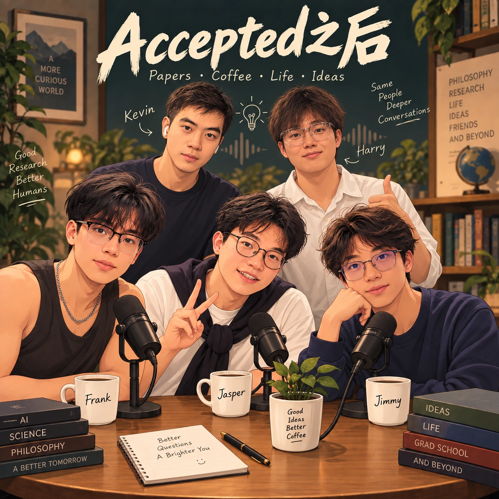
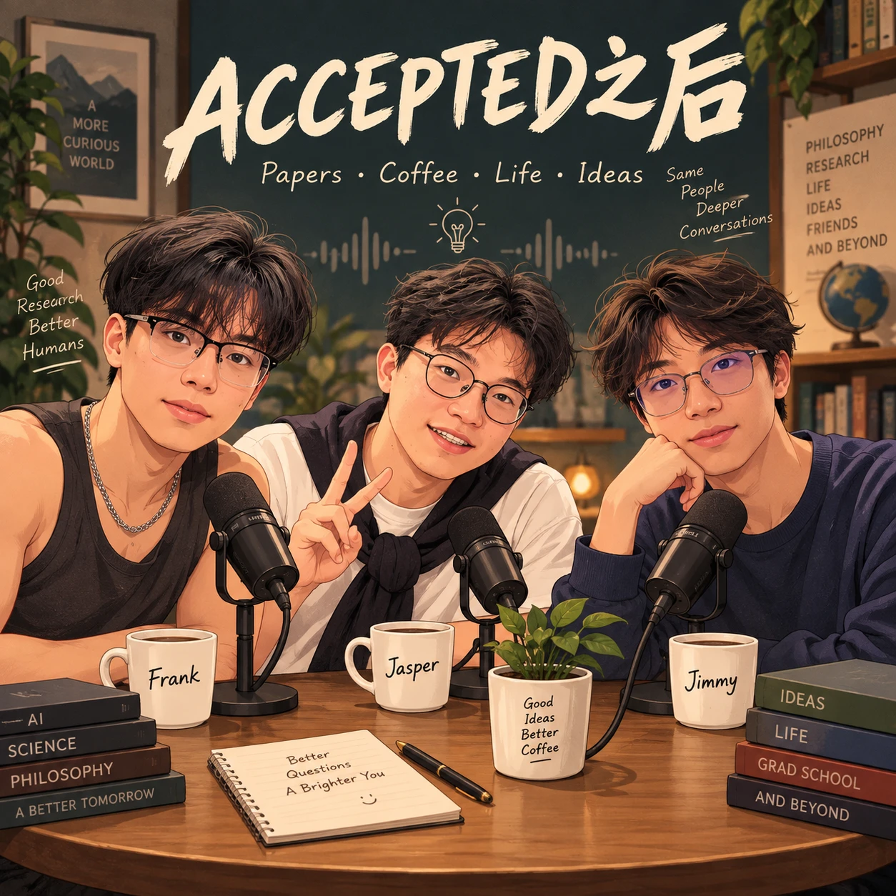

代码之外，还有生活。欢迎来到我们的共同创作空间。认识 Afteraccepted
MADE WITH CURIOSITY
小小的想法。实实在在的作品。
第一批作品正在整理，敬请期待。
OFF THE RECORD. ON THE MIC.
合上电脑。打开话匣子。

ACCEPTED之后
论文可以 Accepted，
人生没有最终稿。
一档由研究生朋友共同发起的聊天播客。从 AI、意识到成长与人生选择，我们把那些写不进论文的问题，认真聊到底。
没有标准答案，只有好奇、咖啡，和还没聊完的话。
看看我们在聊什么两期对话，更多问题。
EPISODESA SMALL STUDIO. A SHARED CURIOSITY.
五个朋友。
不止一种可能。
我们因不同的兴趣相聚，也因为同样的好奇继续同行。
用 Vibe Coding 做点有用的东西，用播客聊点在意的事情。
Frank
Jasper
Jimmy
Kevin
Harry
五种视角，一个 Afteraccepted。
保持好奇动手创造一起分享
THE NEXT CHAPTER
下一件有趣的事，一起做。
Accepted 不是终点。